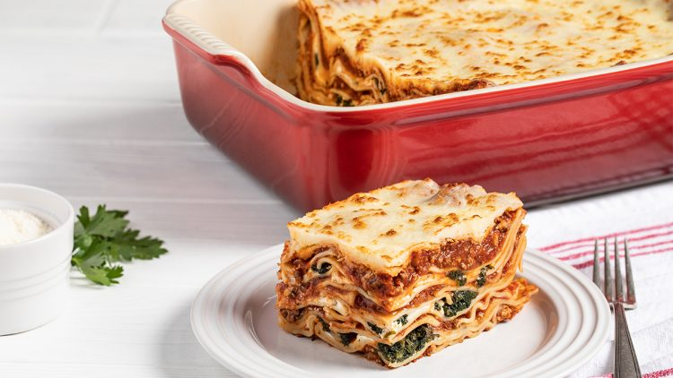

Bomb Ass Lasagna Recipe

Ingredients
- Cheese Filling: For this classic lasagna recipe, the filling contains ricotta and parmesan with seasonings and a couple of tablespoons of parsley. No ricotta? No problem, cottage cheese works just fine in this recipe!
- Meat: I use both Italian sausage and ground beef for great flavor. If using all beef, add a ¼ teaspoon of fennel seeds and some Italian seasoning to the meat mixture for flavor.
- Sauce: To keep this sauce quick, I use pasta sauce or marinara sauce (it's easy to make from scratch with crushed tomatoes and canned tomatoes if you'd prefer).
- Spinach (variation): To make a spinach lasagna, squeeze out most of the moisture of defrosted frozen spinach and add it along with the cheese layer.
Instructions
- Boil pasta: Cook in a large pot of salted water per the recipe below.
- Prepare meat sauce: Cook sausage and beef with onion and garlic. Drain well, add the pasta sauce & simmer it for a few minutes to thicken.
- Combine cheese mixture: Stir the cheese mixture together in a bowl.
- Layer & bake: Layer the meat sauce and cheese mixture with lasagna noodles and bake until browned and bubbly.
How to Layer Lasagna
- Spread about a cup of meat sauce into a 9x13 pan. Add a layer of noodles.
- Top the noodles with some of the ricotta cheese mixture. Repeat the layers, ending with a layer of noodles and sauce
- Cover with foil and bake. Remove foil, top with mozzarella and parmesan, and bake for another 15 minutes.
- Once you have prepared the meat sauce and the cheese mixture, you're ready to layer. This is the order of layers:
- sauce - noodles - cheese
- sauce - noodles - cheese
- sauce - noodles - cheese
- noodles - sauce (bake) - cheese
How Long to Bake
- Bake this lasagna recipe for a total of one hour. To get a perfect browned cheese topping, you'll need to bake it in two stages.
- Layer and cover it tightly with aluminum foil to retain the moisture.
- Once cooked, and heated through, remove the foil, top with cheese, and return to the oven for an additional 15 minutes, or until the top is browned and the lasagna is bubbling.
- Let the lasagna sit/rest for at least 15 minutes once removed from the oven (even 30-45 minutes is fine). This will keep it from becoming runny and help it to keep its shape when cut. Resting is not required when reheating.